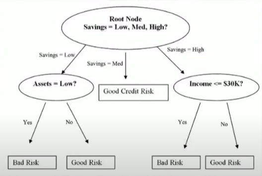
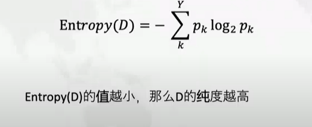
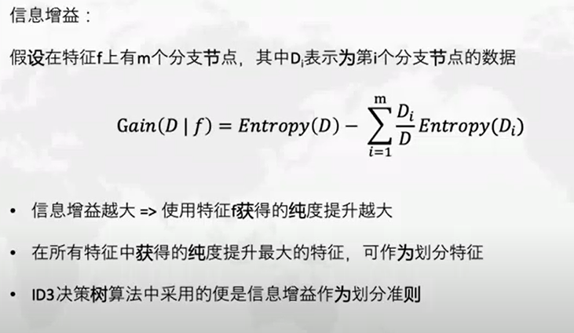
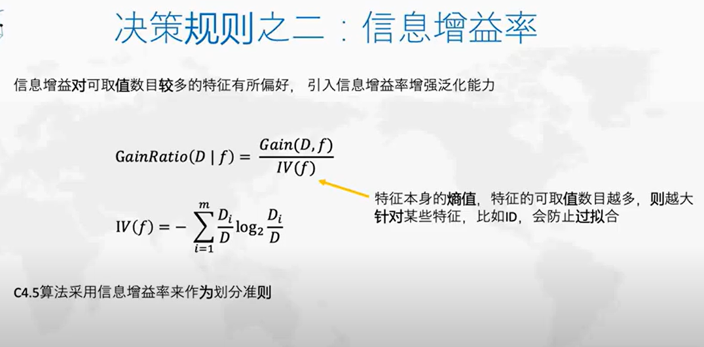
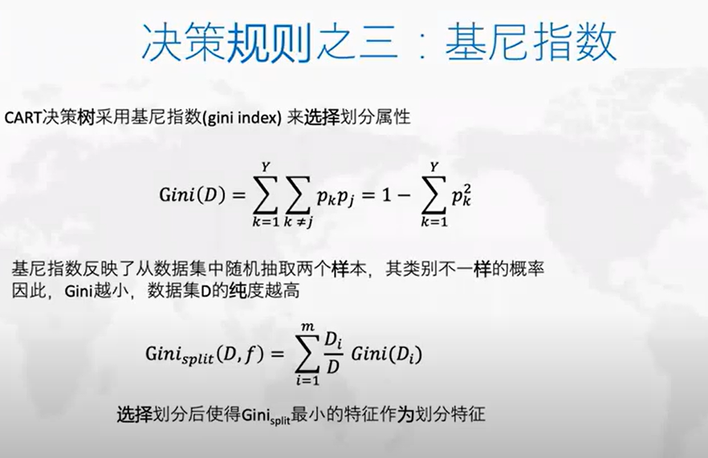

Conclusion on Descision Tree
Contents
Conclusion on Descision Tree¶
Decision Trees (DTs) are a non-parametric（no need to perform much preprocessing and adapt to any form of datasets） supervised learning method used for classification and regression. The goal is to create a model that predicts the value of a target variable by learning simple decision rules inferred from the data features. A tree can be seen as a piecewise constant approximation.It is very explainable and effective to work with different engineering problems in industry. Many applications like random forest and adaboost are typical descision tree-based approaches.

It can automatically learn from data and turns a labeled data with features and labels into a tree-based of a set of if-then-else decision rules like the picture above.It is a flowchart-like structure in which each internal node represents a “test” on an attribute (e.g. whether a coin flip comes up heads or tails), each branch represents the outcome of the test, and each leaf node represents a class label (decision taken after computing all attributes). The paths from root to leaf represent classification rules.
Terminology for ML¶
An Algorithm is a set of rules that a machine follows to achieve a particular goal2. An algorithm can be considered as a recipe that defines the inputs, the output and all the steps needed to get from the inputs to the output. Cooking recipes are algorithms where the ingredients are the inputs, the cooked food is the output, and the preparation and cooking steps are the algorithm instructions.
Machine Learning is a set of methods that allow computers to learn from data to make and improve predictions (for example cancer, weekly sales, credit default). Machine learning is a paradigm shift from “normal programming” where all instructions must be explicitly given to the computer to “indirect programming” that takes place through providing data
A learner learns a model from labeled training data. The model is used to make predictions

A Machine Learning Model is the learned program that maps inputs to predictions. This can be a set of weights for a linear model or for a neural network. Other names for the rather unspecific word “model” are “predictor” or - depending on the task - “classifier” or “regression model”. In formulas, the trained machine learning model is called \(\hat f\) or \(\hat f(x)\)
A Dataset is a table with the data from which the machine learns. The dataset contains the features and the target to predict. When used to induce a model, the dataset is called training data.
An Instance is a row in the dataset. Other names for ‘instance’ are: (data) point, example, observation. An instance consists of the feature values and, if known, the target outcome \(x^{(i)}\) and, if known, the target outcome \(y_i\)
The Features are the inputs used for prediction or classification. A feature is a column in the dataset. Throughout the book, features are assumed to be interpretable, meaning it is easy to understand what they mean, like the temperature on a given day or the height of a person. The interpretability of the features is a big assumption. But if it is hard to understand the input features, it is even harder to understand what the model does. The matrix with all features is called X and \(x^{(i)}\) for a single instance. The vector of a single feature for all instances is \(x_j\) and the value for the feature j and instance i is \(x_j^{(i)}\)
The Target is the information the machine learns to predict. In mathematical formulas, the target is usually called y or \(y_i\) for a single instance.
A Machine Learning Task is the combination of a dataset with features and a target. Depending on the type of the target, the task can be for example classification, regression, survival analysis, clustering, or outlier detection.
The Prediction is what the machine learning model “guesses” what the target value should be based on the given features. In this book, the model prediction is denoted by \(\hat f(x^{(i)})\) or \(\hat y\)
Questions for homework:¶
- How to prevent the overfitting problem in the decision tree?
- How to find the optimal strategy for dividing the data on the branch in Decision Tree?

The formula \(\hat f\) describes the relationship between the outcome y and features x.
Can you find features, feature values and the outcomes in the tree?¶
which are Node Branch and Leaf¶
Each instance falls into exactly one leaf node which is the subset
But where do the subsets come from? This is quite simple: CART takes a feature and determines which cut-off point minimizes the variance of y for a regression task or the Gini index of the class distribution of y for classification tasks. The variance tells us how much the y values in a node are spread around their mean value. The Gini index tells us how “impure” a node is, e.g. if all classes have the same frequency, the node is impure, if only one class is present, it is maximally pure. Variance and Gini index are minimized when the data points in the nodes have very similar values for y. As a consequence, the best cut-off point makes the two resulting subsets as different as possible with respect to the target outcome. For categorical features, the algorithm tries to create subsets by trying different groupings of categories. After the best cutoff per feature has been determined, the algorithm selects the feature for splitting that would result in the best partition in terms of the variance or Gini index and adds this split to the tree. The algorithm continues this search-and-split recursively in both new nodes until a stop criterion is reached. Possible criteria are: A minimum number of instances that have to be in a node before the split, or the minimum number of instances that have to be in a terminal node.



